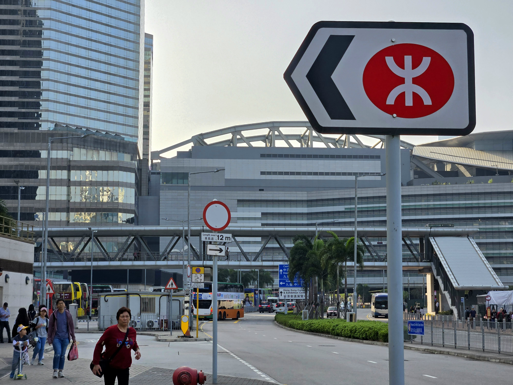

Travel is a journey of discovery, offering the chance to experience new landscapes, cuisines, and ways of life. It takes us beyond our comfort zones and into the heart of different cultures, allowing us to see the world through a fresh lens. Whether wandering through ancient ruins, exploring bustling city streets, or relaxing in nature’s tranquility, every destination tells a story. Travel not only creates lasting memories but also teaches valuable lessons about adaptability, patience, and appreciation. With every trip, we return home with a newfound sense of wonder and a deeper connection to the world around us.

Travel is an enriching experience that allows people to explore new places, cultures, and traditions. It opens the mind to different perspectives and provides a break from daily routines. Whether it's a relaxing beach vacation, an adventurous mountain trek, or a cultural city tour, every journey offers unique memories and learning opportunities. Traveling also helps build connections with people from diverse backgrounds, fostering understanding and appreciation for the world. Beyond the excitement, it promotes personal growth, boosts confidence, and creates unforgettable stories. No matter the destination, every trip is a chance to discover something new about the world and oneself.